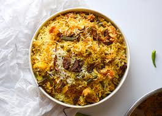
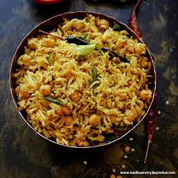

Pure-Veg
-

Mutter Paneer
This curry made with Indian cottage cheese and green peas in a mildly spiced tomato-based gravy. It’s creamy and often garnished with coriander.
Price : 200 -
Shahi Paneer
A rich and royal dish made with paneer in a creamy, cashew and yogurt-based gravy, flavored with aromatic spices like cardamom. "Shahi" means royal, and this dish is known for its luxurious taste.
Price : 220 -

Kajoo Masala
A curry featuring cashews (kajoo) in a thick, spicy gravy, often made with tomato, onion, and traditional Indian spices. It’s a rich and nutty dish commonly served with naan or rice.
Price : 220 -

Palak Paneer
A healthy dish made with paneer cubes cooked in a pureed spinach (palak) gravy, flavored with garlic, ginger, and traditional spices. It has a smooth texture and is a popular vegetarian option.
Price : 180 -
Veg Kolhapuri
A spicy mixed vegetable curry from the Kolhapur region of Maharashtra, known for its bold flavors. The vegetables are cooked in a thick, spicy, and slightly tangy gravy, making it a fiery and hearty dish.
Price : 160 -
Dal Tadka
A simple yet flavorful dish made from lentils (usually a mix of toor and moong dal) cooked and tempered with a mixture of spices, garlic, and ghee. The tadka (tempering) adds a burst of flavor and is usually poured over the dal just before serving.
Price : 150 -
Bendi Fry
A stir-fried dish made with okra (bhendi), which is sautéed with onions, green chilies, and Indian spices. It is a dry, crispy, and flavorful side dish often served with chapati or rice.
Price : 170
Non-Veg
-

Butter Chicken
A creamy and flavorful dish made with marinated chicken cooked in a rich, buttery tomato-based sauce, often seasoned with garam masala and other spices. It's typically served with naan or rice.
Price : 350 -
Kadai Chicken
A spicy and tangy chicken curry cooked with bell peppers, tomatoes, and a blend of aromatic spices in a wok-like pan called a "kadai." The dish is known for its robust flavors and is often garnished with fresh coriander.
Price : 250 -
Chicken Curry
This dish involves marinating chicken pieces in a mix of spices and then frying them until they are crispy and golden brown. It can be prepared with various spice blends depending on regional preferences.
Price : 300 -
Fish Fry
Fish fillets are seasoned with spices, often including turmeric, chili powder, and garam masala, and then shallow-fried until crispy. It's a popular and flavorful way to prepare fish.
Price : 400 -
Egg Curry
A flavorful curry made with boiled eggs simmered in a spiced gravy of onions, tomatoes, garlic, ginger, and a blend of Indian spices like cumin, turmeric, garam masala, and coriander.
Price : 150 -

Chicken Handi sp
A special version of chicken handi involves slow-cooking chicken in a traditional clay pot with a rich, spicy gravy made from tomatoes, onions, and a blend of spices. The slow cooking process enhances the flavors.
Price : 270 -
Prawns Fry
Prawns are marinated in a mixture of spices, then fried until they are crispy and golden. This dish is known for its quick preparation and bold flavors.
Price : 450
Bread's
-
Tanduri Roti
A traditional Indian flatbread made from whole wheat flour, cooked in a tandoor (clay oven). It has a slightly crispy texture on the outside and soft inside, often served with curries.
Price : 20 -

Lachala Paratha
A layered, flaky flatbread made from whole wheat flour. The dough is rolled out and folded multiple times to create its signature layers, then cooked on a tawa (griddle) with ghee or butter, making it crispy and rich.
Price : 30 -

Butter Naan
A soft, leavened flatbread made from refined flour, traditionally cooked in a tandoor. Butter is generously applied to the naan, giving it a rich flavor and soft texture, perfect for pairing with creamy curries.
Price : 25 -

Romali Roti
A thin, soft flatbread made from refined flour, named "roomali" (handkerchief) because of its very fine, delicate texture. It is usually cooked on an inverted tawa, giving it a unique, light texture.
Price : 20 -

Aloo Paratha
A stuffed flatbread made from whole wheat flour and filled with a spiced mashed potato mixture. The paratha is pan-fried with ghee or oil, giving it a crispy exterior and soft, flavorful filling.
Price : 50 -

Plain Naan
A leavened flatbread made from refined flour, typically cooked in a tandoor. It is soft and fluffy, with a slightly chewy texture, and is usually served with a variety of curries.
Price : 20 -

Garlic Naan
minced garlic and herbs before being cooked. It has a savory garlic flavor and is often served with butter for added richness.
Price : 30
Rice
-

Veg Pulao
A light and flavorful rice dish cooked with basmati rice, mixed vegetables (such as carrots, peas, and beans), and aromatic spices like cumin, bay leaves, and garam masala. It’s a mildly spiced dish and often garnished with fried onions or fresh coriander.
Price : 130 -

Plain Rice
Simply boiled or steamed rice without any added spices or flavors. It is typically used as a base for curries, dals, or gravies and can be made with different varieties of rice, like basmati or regular white rice.
Price : 90 -

Biryani
A rich and aromatic rice dish layered with marinated meat (or vegetables for veg biryani) and cooked with fragrant basmati rice. It's prepared with a variety of spices, including saffron, cardamom, cloves, and cinnamon, and often topped with fried onions, boiled eggs, and nuts.
Price : 150 -
Tawa pulao
A popular Mumbai street food made by stir-frying cooked rice on a flat pan (tawa) with a mix of vegetables, pav bhaji masala, and other spices. It’s spicy, tangy, and full of bold flavors, often served with a side of raita or salad.
Price : 140 -
Paneer Pulao
A mildly spiced and fragrant rice dish made with basmati rice, cubes of paneer (Indian cottage cheese), and a mix of vegetables like peas, carrots, and beans.
Price : 140 -

Mutton Pulao
A flavorful rice dish made with basmati rice, tender pieces of mutton (goat or lamb), and a blend of aromatic spices like cumin, cinnamon, bay leaves, and cardamom
Price : 150 -

Chicken Pulao
this dish features basmati rice cooked with marinated chicken pieces and a blend of whole spices. The chicken is cooked until tender, and the rice absorbs the flavorful chicken broth, creating a mildly spiced, fragrant pulao.
Price : 210
Dessert
-

Gulab Jamun
Deep-fried dough balls soaked in sugar syrup, flavored with cardamom and rose water.
Price : 100 -
Rasmalai
Soft, spongy cottage cheese dumplings soaked in sweet, flavored milk.
Price : 120 -
Chocolate Brownie
A rich, gooey chocolate dessert, often served warm with ice cream.
Price : 120 -

Kaju Katli
A smooth and delicious Indian sweet made from cashew nuts and sugar.
Price : 200 -

Ice Cream Sundae
A layered ice cream dessert topped with sauces, nuts, and fruits, offering a variety of flavors.
Price : 150 -
Kulfi
A traditional Indian frozen dessert made with condensed milk, flavored with cardamom, saffron, or pistachios.
Price : 60 -
Jalebi
Crispy, spiraled deep-fried batter soaked in saffron-flavored sugar syrup.
Price : 50
South-Indian
-

Plain Dosa
A thin, crispy crepe made from fermented rice and urad dal (black gram) batter. It’s cooked on a hot griddle until golden brown and typically served with coconut chutney and sambar (a lentil-based vegetable stew).
Price : 35 -
Masala Dosa
a spiced potato filling. The dosa is stuffed with a mixture of mashed potatoes, onions, mustard seeds, and curry leaves, making it more flavorful and hearty.
Price : 45 -

Vada Sambar
Vada refers to a deep-fried savory doughnut-shaped fritter made from urad dal or lentil batter. It’s crispy on the outside and soft on the inside. Vada is served with sambar and coconut chutney
Price : 40 -

Idli Sambar
Idli is a soft, steamed cake made from fermented rice and urad dal batter. It is light and fluffy, served with sambar and chutney, making for a wholesome breakfast or snack.
Price : 50 -

Pulihora
A tangy rice dish made with tamarind paste, curry leaves, mustard seeds, and a tempering of peanuts, lentils, and red chilies. It’s popular in South Indian cuisine and is often prepared during festivals or as a temple offering.
Price : 11 -

Rasam Rice
A simple yet flavorful dish made by mixing cooked rice with rasam, a tangy and spicy South Indian soup. Rasam is made from tamarind, tomatoes, lentils, and spices like black pepper, cumin, mustard seeds, and curry leaves.
Price : 50 -
Uttapa
A thick, savory pancake made from fermented rice and urad dal batter. Unlike dosa, uttapam is thicker and topped with a variety of ingredients like onions, tomatoes, chilies, and sometimes carrots or bell peppers. It’s crispy on the edges and soft in the center, typically served with
Price : 70
Chinese
-

Noodles
Thin strands of dough, typically made from wheat or rice flour, boiled or stir-fried and flavored with sauces, vegetables, or meats. Noodles are versatile and can be cooked in various styles, such as plain, spicy, or with a variety of sauces like soy or garlic.
Price : 140 -
Manchurian
A popular Indo-Chinese dish, where deep-fried vegetable or chicken balls are cooked in a tangy, spicy sauce made with soy sauce, garlic, ginger, and chilies. There are dry and gravy versions, often served with fried rice or noodles.
Price : 130 -

Fried Rice
Stir-fried rice cooked with vegetables, eggs, or meats, flavored with soy sauce, garlic, and other spices. It’s often a complete meal in itself and is a staple in Asian cuisine, with many regional variations.
Price : 100 -

Machew Soup
A spicy and tangy Indo-Chinese soup made with a combination of vegetables or meat, garlic, ginger, soy sauce, and sometimes thickened with cornflour. It's typically garnished with crispy fried noodles.
Price : 90> -
Szechwan Chilli
A spicy dish made with vegetables, paneer, or chicken cooked in a fiery Szechwan sauce, which is a blend of dried red chilies, garlic, ginger, and soy sauce. It’s often served as a starter or side dish.
Price : 160 -

Szechwan Noodles
Noodles stir-fried with vegetables or meat, tossed in a bold and spicy Szechwan sauce. The sauce gives the dish a distinct fiery flavor and is often garnished with spring onions for added texture.
Price : 150 -

Chicken Manchow Soup
Chicken Manchow Soup is a spicy Indo-Chinese soup made with chicken, vegetables, and flavorful broth, topped with crispy fried noodles.
Price : 170
Drinks
-

Thums Up
A bold, strong cola flavor with a slightly spiced aftertaste. Popular in India.
Price : 80 -
Sprite
A lemon-lime flavored clear soft drink known for its crisp and refreshing taste.
Price : 70 -

Fanta
A tangy orange-flavored carbonated drink that's light and bubbly.
Price : 60 -
7up
A lemon-lime flavored non-cola soft drink, perfect for quenching thirst.
Price : 60 -

Coca-cola
A refreshing carbonated soft drink with a classic cola flavor. Perfect for any occasion.
Price : 70